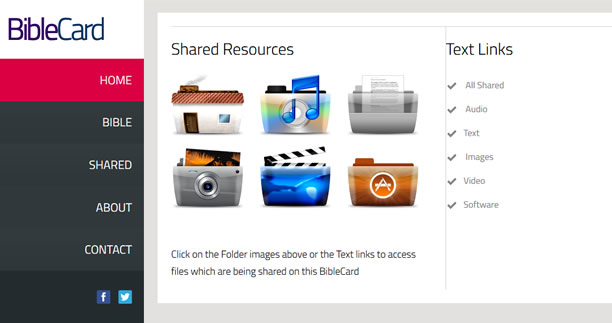

-

-

- 
What is The BibleCard?
The BibleCard is a free resource enabling you to share digital Bibles and Bible Resources from an SD Card or USB stick..
The BibleCard contains the inScript Bible study software and a website to make it easy to share Bible training resources.
The BibleCard offers a way for someone to engage in these Bible materials using a web browser with or without an internet connection.
This is a free project built with opensource software. The BibleCard files can be downloaded, unzipped and duplicated onto computers or memory cards any number of times free of charge.
Share with as many people as you can.
Bible credits -
Project Contacts
How do I Make a BibleCard?
- -> Download the BibleCard file from TheBibleCard.org
- -> Unzip the compressed file
- -> Copy all the unzipped files to an sd card or USB
- -> Connect the BibleCard to your computer
- -> Copy files you want to share to the appropriate folder in the Shared folder